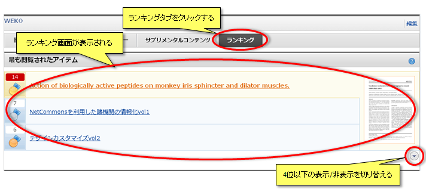

ランキング
「ランキング」タブをクリックするとランキング画面が表示されます。
アイテムの閲覧回数やファイルのダウンロード回数、検索キーワードなどのランキングを閲覧できます。
各ランキングのおよびをクリックすると、4位以下の表示/非表示を切り替えることができます。

アイテムの閲覧回数やファイルのダウンロード回数、検索キーワードなどのランキングを閲覧できます。
各ランキングのおよびをクリックすると、4位以下の表示/非表示を切り替えることができます。
最も閲覧されたアイテム
公開中アイテムの閲覧回数によるランキングです。
アイテムタイトルおよび閲覧回数と1位のアイテムのサムネイル画像が表示されます。
アイテムタイトルを選択した場合は、そのアイテムの詳細画面を表示します。
サムネイル画像を選択した場合は、ファイルのダウンロードが開始されます。
アイテムタイトルおよび閲覧回数と1位のアイテムのサムネイル画像が表示されます。
アイテムタイトルを選択した場合は、そのアイテムの詳細画面を表示します。
サムネイル画像を選択した場合は、ファイルのダウンロードが開始されます。
最もダウンロードされたアイテム
ファイルのダウンロード回数によるランキングです。
アイテムタイトルおよびダウンロード回数と1位のアイテムのサムネイル画像が表示されます。
ファイル名を選択した場合は、そのファイルが含まれるアイテムの詳細画面を表示します。
サムネイル画像を選択した場合は、ファイルのダウンロードが開始されます。
アイテムタイトルおよびダウンロード回数と1位のアイテムのサムネイル画像が表示されます。
ファイル名を選択した場合は、そのファイルが含まれるアイテムの詳細画面を表示します。
サムネイル画像を選択した場合は、ファイルのダウンロードが開始されます。
最もアイテムを作成したユーザ
ユーザごとのアイテム作成数によるランキングです。
ユーザのハンドルと作成したアイテム数が表示されます。
ユーザのハンドルと作成したアイテム数が表示されます。
最も検索されたキーワード
キーワードごとの検索回数によるランキングです。
検索されたキーワードおよび検索回数が表示されます。
キーワードを選択 すると、そのキーワードの検索結果が表示されます。
検索されたキーワードおよび検索回数が表示されます。
キーワードを選択 すると、そのキーワードの検索結果が表示されます。
新着アイテム
新たに登録されたアイテムが表示されます。
アイテムタイトルおよび公開日時と最新のアイテムのサムネイル画像が表示されます。
アイテムタイトルを選択した場合は、そのアイテムの詳細画面を表示します。
サムネイル画像を選択した場合は、ファイルのダウンロードが開始されます。
アイテムタイトルおよび公開日時と最新のアイテムのサムネイル画像が表示されます。
アイテムタイトルを選択した場合は、そのアイテムの詳細画面を表示します。
サムネイル画像を選択した場合は、ファイルのダウンロードが開始されます。